Découvrez une collection de pierres naturelles, leurs origines, leurs vertues et leurs histoires.
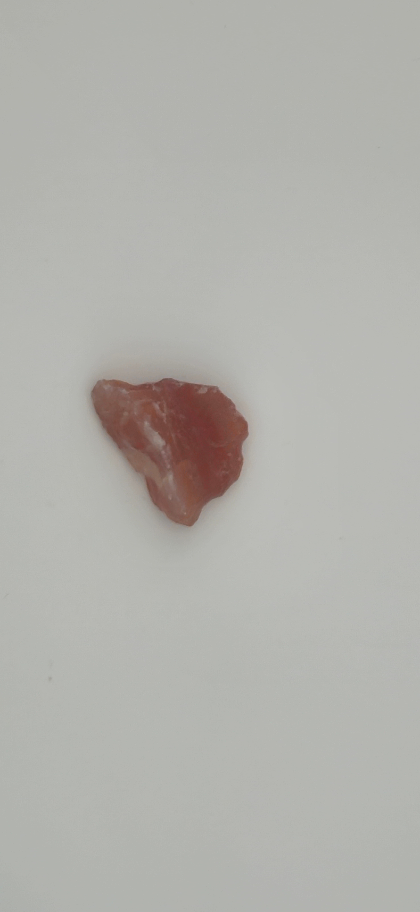
Régulation de la digestion
Renforcement de la vue
Stabilisation de la tension artérielle
Soutien système lymphatique et immunitaire
Apaisement des douleurs et des crampes
Amélioration de la santé cutanée
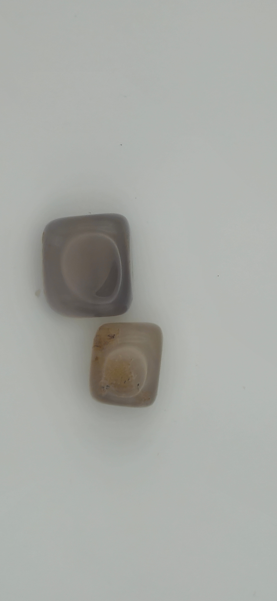
Soulage les tensions musculaires
Favorise la récupération physique
Apaisement des douleurs liées au stress
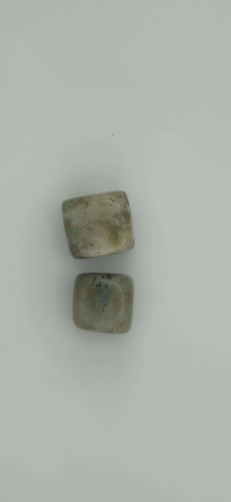
Soutien le système immunitaire
Soulage les tensions musculaires
Regain d’énergie
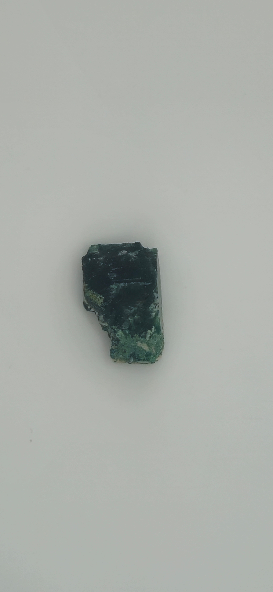
Renforcement du système immunitaire
Amélioration de la digestion
Effet anti-inflammatoire
Soutien du système respiratoire
Reduction du stress et des tensions
Equilibre émotionnel et stabilité
Stimulation de la croissance des cheveux et de la peau
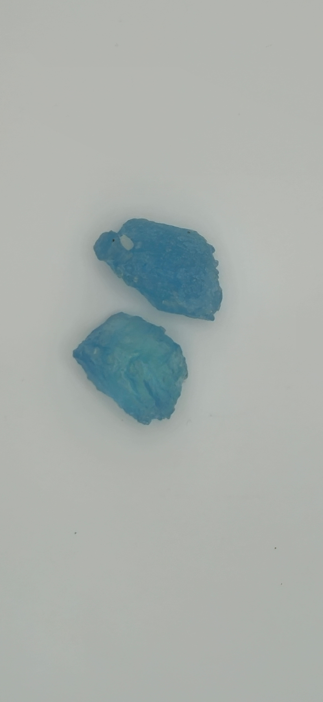
Renforcement du sytème respiratoire
Soutien au système Lymphatique
Apaisment des affections cutannées
Amélioration de la santé Bucco-dentaire
Régulation des hormones
Soutien dans le processus de désintoxication
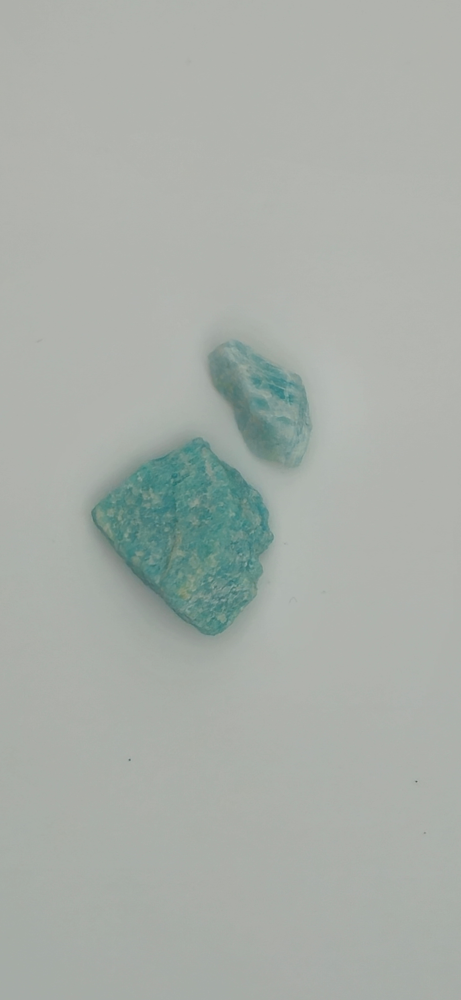
Régulation du système nerveux
Equilibre métabolique
Protection contre les ondes éléctromagnétique
Renforcement musculaire et osseux
Soulagement des crampes et douleurs musculaires
Support du système immunitaire
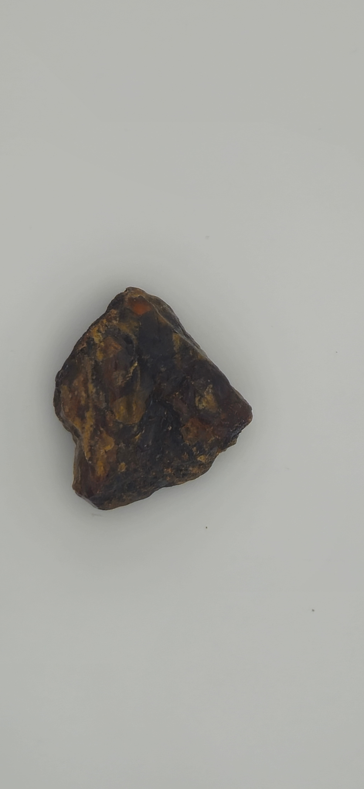
Boost le système immunitaire
Soulagement de la douleur
Régulation de l’énergie vitale
Purification et détoxification
Renforcement de la confiance en soi et réduction de l’anxiété
Amélioration du sommeil
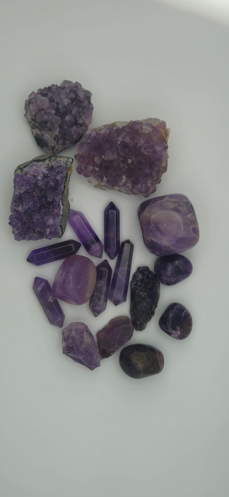
Renforcement de la sphère neurologique
Purification du sang et soutien au système immunitaire
Apaisement des douleurs physiques
Equilibrage des sysèmes endocrinien et digestif
Stimulation de la régénération cellulaire
Aide à la désintoxication et à la purification
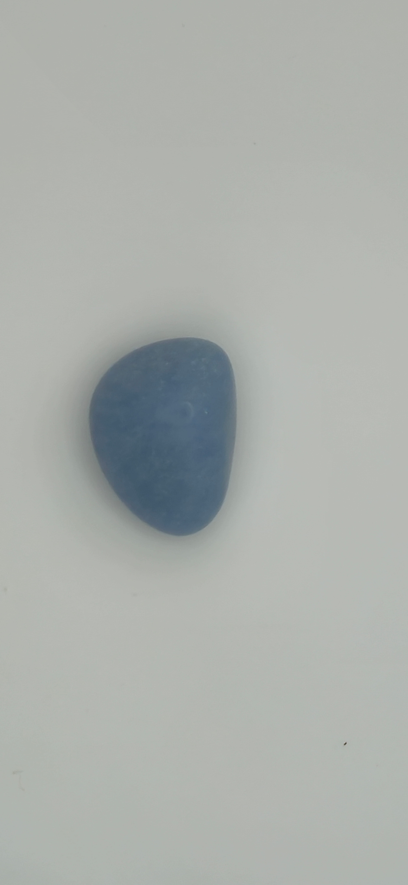
Apaisement des inflammations et douleurs
Renforcement du système respiratoire
Stimulation de la régénération cellulaire
Equilibrage des fluides corporels
Soutien du système lymphatique
Réduction du stress physique
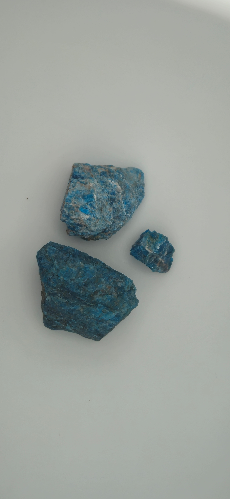
Stimulation du métabolisme
Renforcement des os et des dents
Amélioration du système digestif
Soutien thyroïdien
Réduction des inflammations
Optimisation des fonctions immunitaire
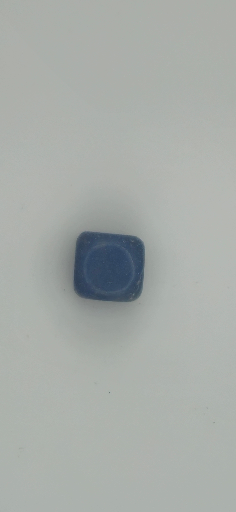
Stimulation du système immunitaire
Facilitation de la circulation énérgétique
Désintoxication du corps
Réduction des douleurs
Harmonisations des fonctions corporelles
Soutien à la concentration et à la clarté mentale
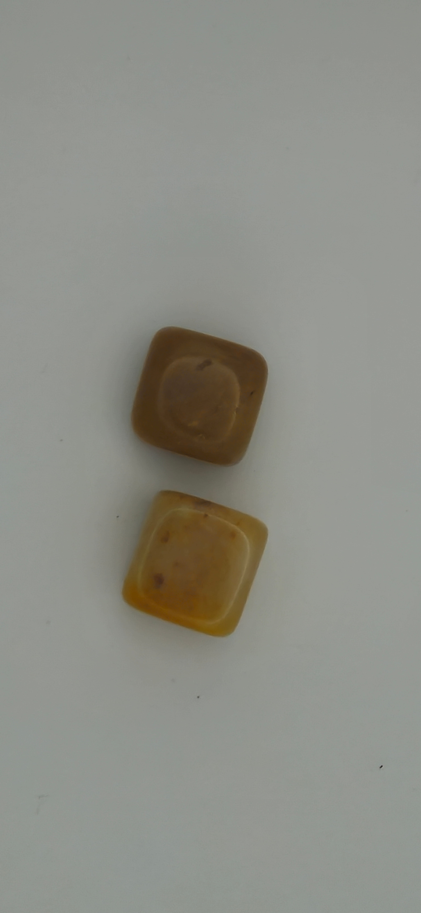
Favorise la régénération cutanée
Stimule la croissance des cheveux
Soutien cardiaque et circulatoire
Renforcement du sysème musculaire
Amélioration de la vitalité générale
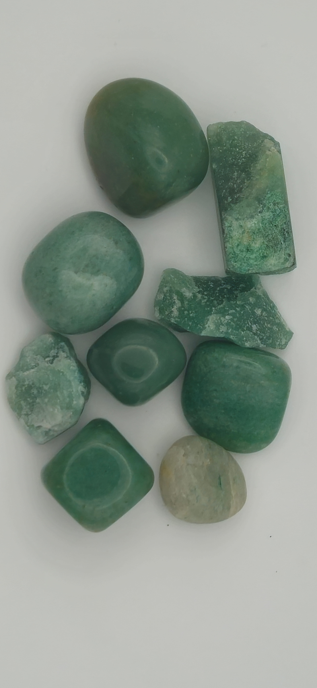
Renforcement du système cardiovasculaire
Soutien du système immunitaire
Amélioration de bien-être digestif
Effet apaisant sur la peau
Réduction du stress et des tensions musculaires
Equilibre de la pression artérielle
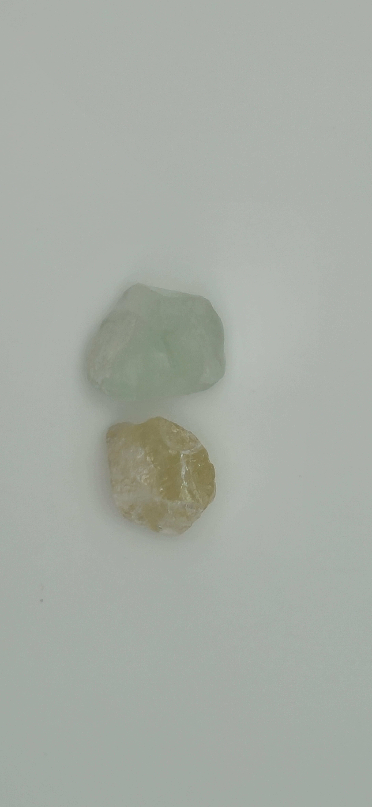
Stimulation du métabolisme et de la croissance osseuse
Régulation des fonctions d’assimilation
Equilibrage du système digestif
Amélioration de la capacité de régénération
Renfocrement du système immunitaire
Soutien au système urinaire et rénal
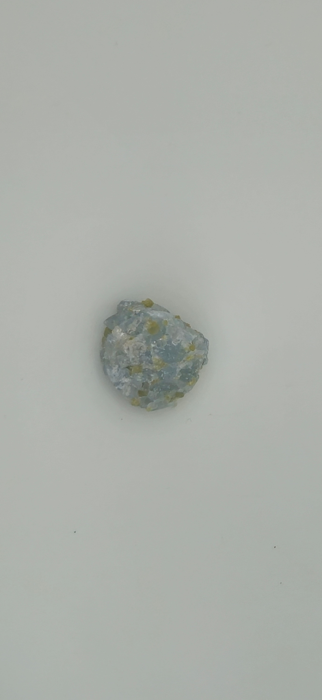
Favorisation du repos et de la détente musculaire
Soutien respiratoire
Amélioration de la qualité du sommeil
Renforcement du système immunitaire
Aide a la régénération des tissus
Équilibre des énergies fluidique
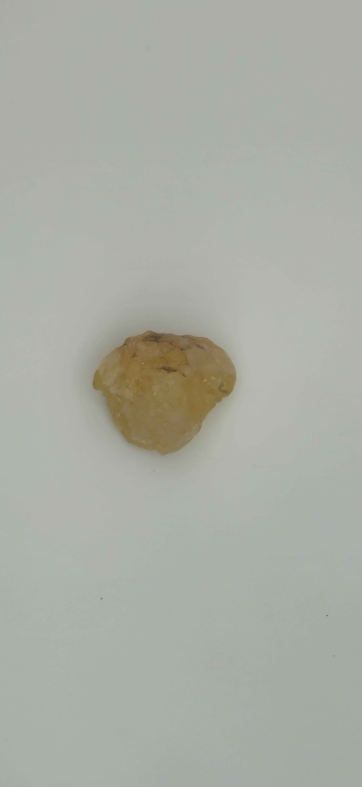
Boost l’énergie vitale
Soutien du système digestif
Renforcement du sysème immunitaire
Amélioration de la peau
Equilibrage des hormones
Détente musculaire
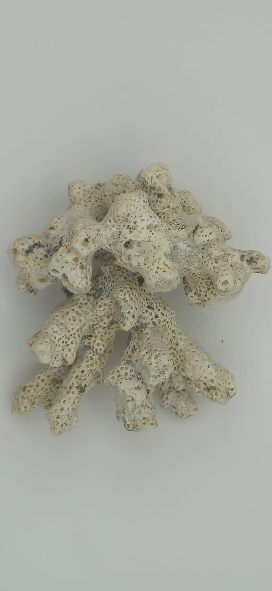
Soutien du sysème osseux
Soutien du sytème dentaire
Soulage les problème liés à la décalcification
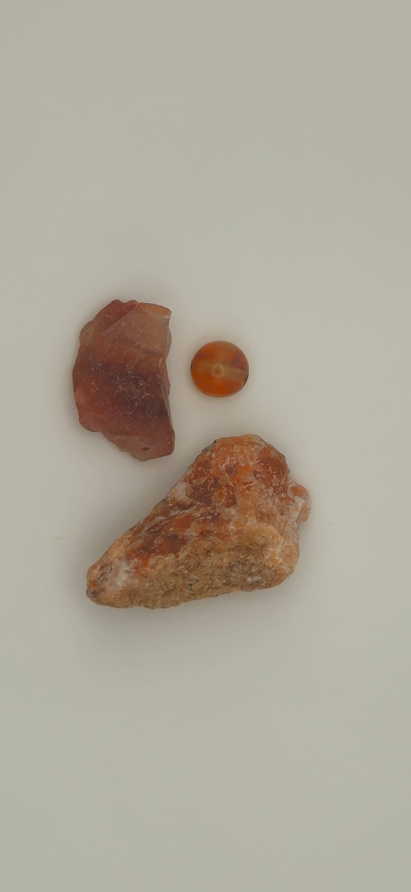
Stimulant de la vitalité physique
Favorisation de la fetilité et du système reproducteur
Amélioration de l’asborption des vitamines et minéraux
Soutien au système sanguin et a la circulation
Réduction des inflamations et des douleurs
Renforcement de la colonne vertébrale et des os
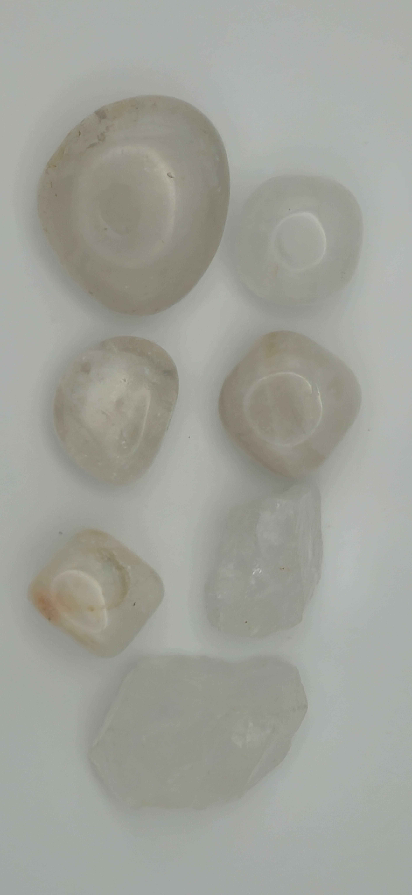
Renforcement du système cardiovasculaire et nerveux
Anti-douleur & Anti-stress
Problèmes gastriques et intestinaux
Amplification des facultés de perceptions spirituelles
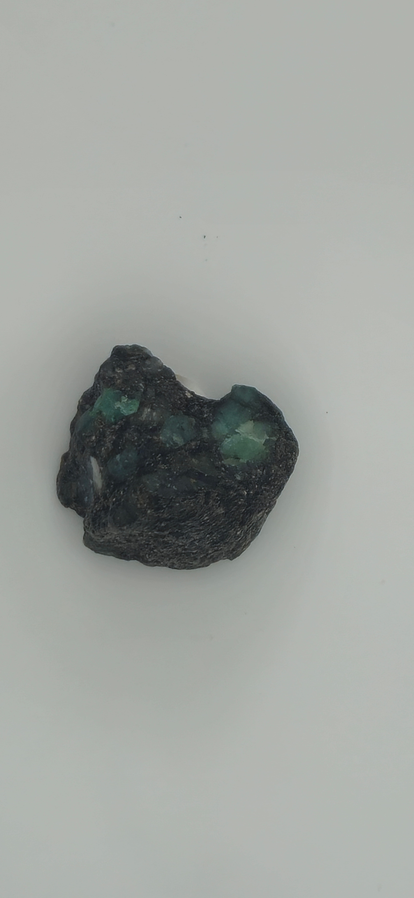
Soulage les migraines et maux de têtes
Renforcement du système immunitaire
Apaisement des douleurs musculaires et articulaires
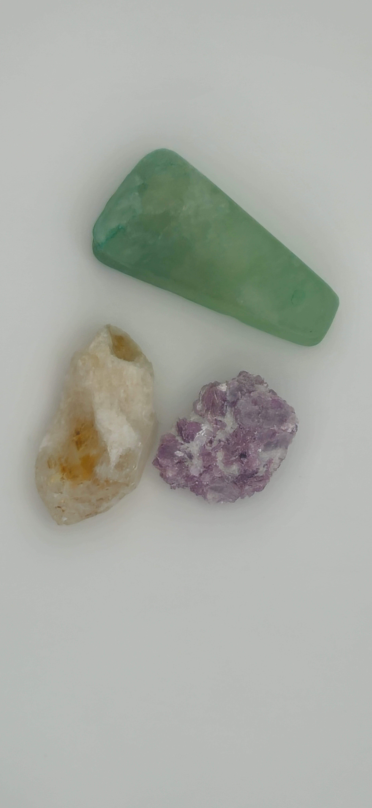
Renforcement du système osseux
Optimisation de la santé dentaire
Stimulation du système immunitaire
Amélioration des fonctions respiratoire
Equilibrage des fonctions hormonales
Purification du système digestif
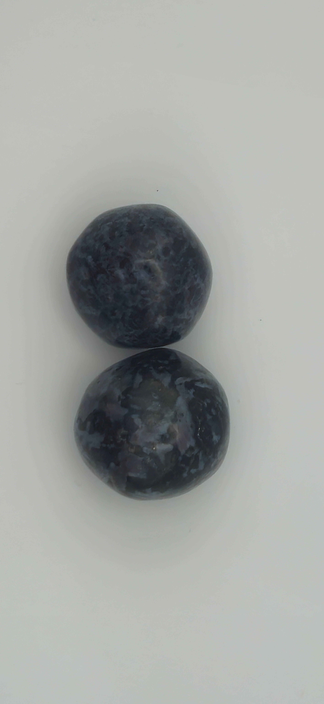
Renforcement de l’énergie vitale
Soutein système digestif
Renforce le système ossseux
Renforce le système immunitaire
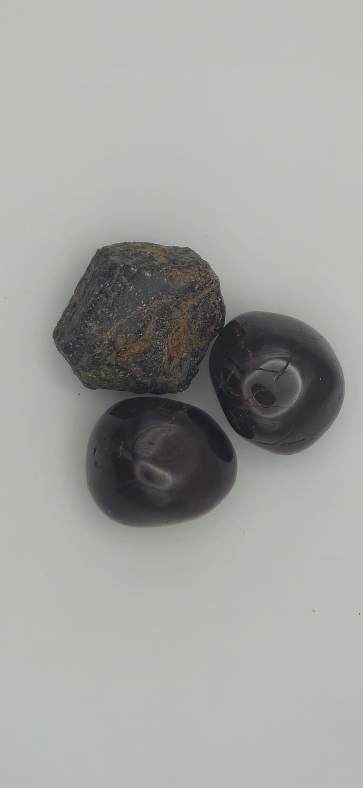
Revitalisation énérgetique
Soutien du système cardiovasculaire
Renforcement de l’immunité
Aide à la détoxification
Soulagement des douleurs
Equilibre émotionnel et mental
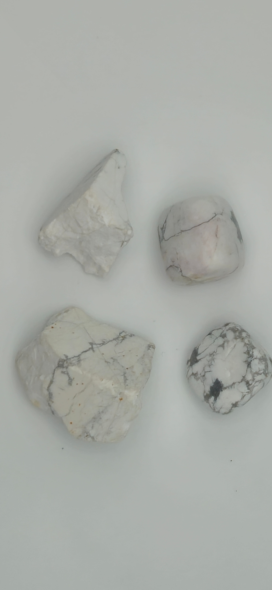
Soutien au système digestif
Apaisement des tensions musculaires
Amélioration du sommeil
Réduction du stress et de l’anxiété
Equilibre des fluides corporels
Régulation sur le métabolisme du calcium
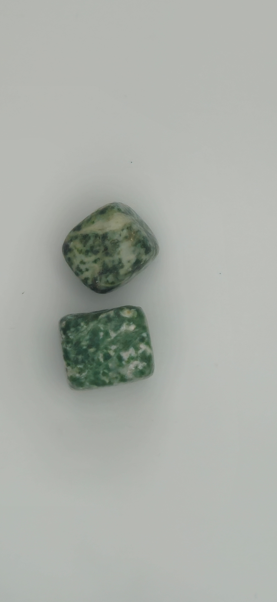
Soutien au système urinaire et rénale
Renforce le système circulatoire
Renforce le système nerveux
Amélioration du sommeil
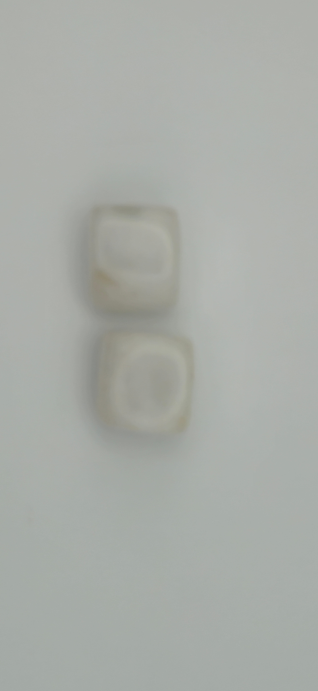
Renforcement de l’équilibre hormnoal
Purification des fluides corporels
Stimulation du système lymphatique
Soutien du système nerveux
Amélioration de la flexibilité des articulations
Augmentation de l’énergie vitale
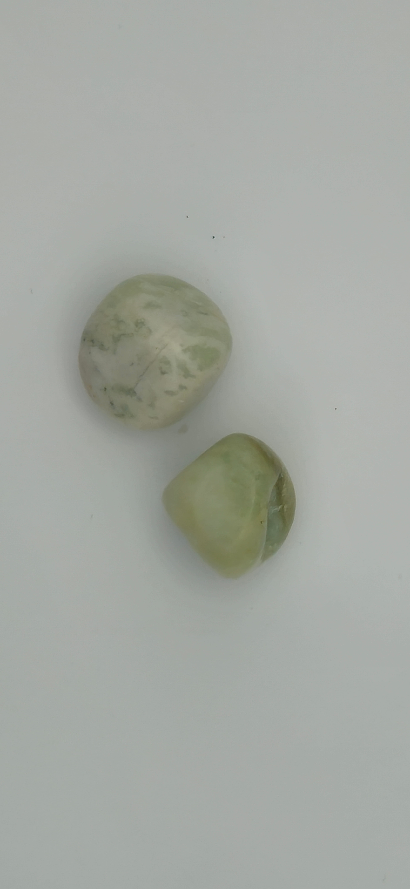
Soutient les articulations et les os
Apaise les tensions musculaire
Détoxifiant
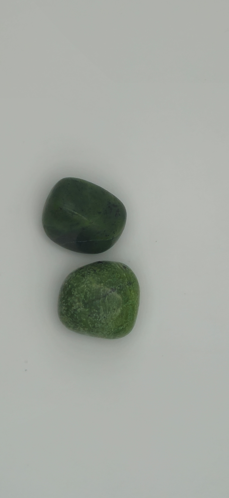
Renforcement du sytème rénal
Amélioration de la circulation sanguine
Soutien du système immunitaire
Propriété anti-inflammatoire
Effet détoxifiants
Equilibrage des fluides corporels
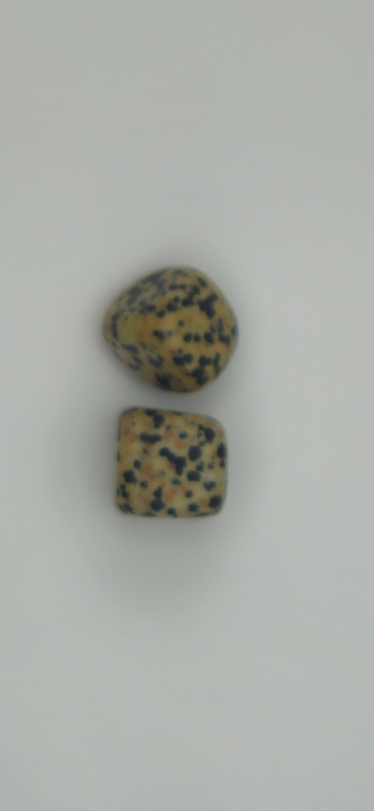
Renforcement de la vitalité physique
Equilibrage des énergies corporelles
Purification et protection contre les toxines
Soulagement de la douleur
Soutien immunitaire
Favorisation de la clarté mentale
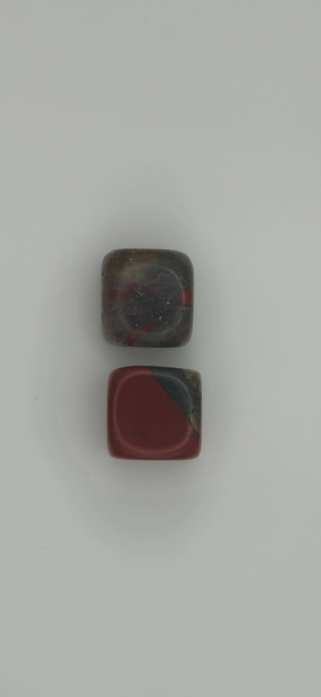
Purification du système lymphatique et sanguin
Renforcement du système immunitaire et cardiovasculaire
Aide à la détoxification
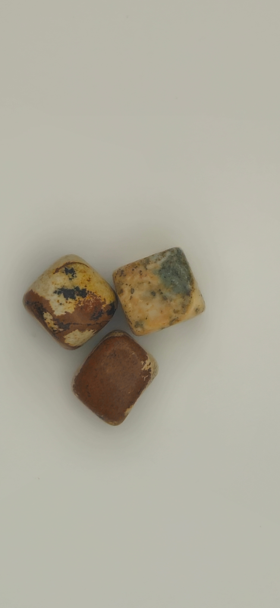
Foritification globale de l’organisme
Sevrage tabagique
Regularisation des troubles digestifs
Renforcement du système immunitaire
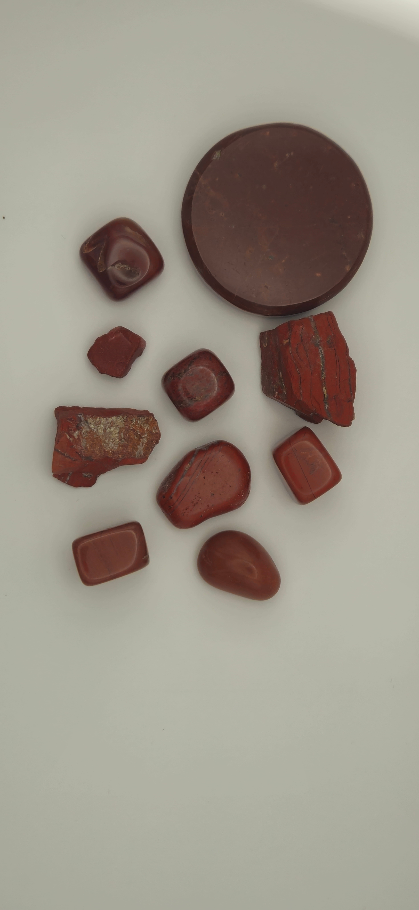
Revitalisation de l’énergie vitale
Renforcement du système circulatoire
Soutien du système digestif
Détoxification et purification
Apaisement des douleurs
Equilibre hormonal
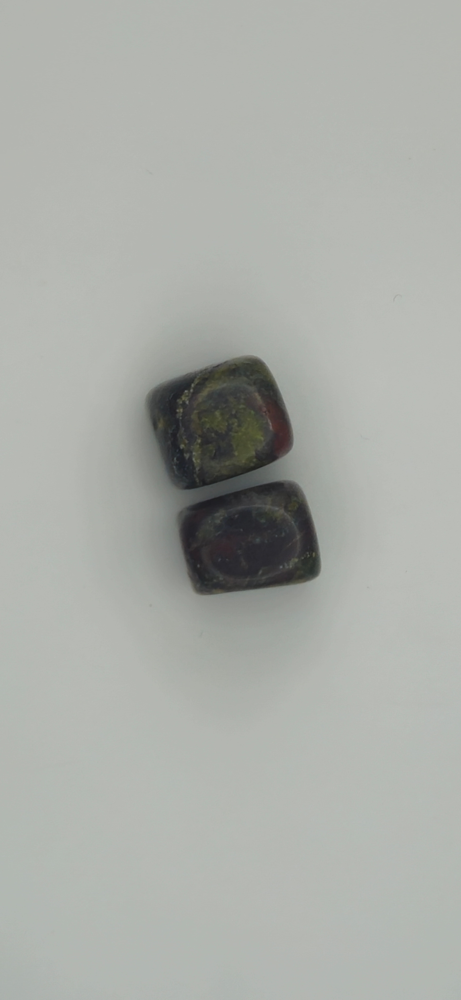
Renforcement de l’énergie vitale
Amélioration des fonctions Hématopoïétiques
Purification et désintoxication
Apaisement des douleurs
Equilibre des fonctions corporelles
Soutien psychologique
Harmonisation énergétique
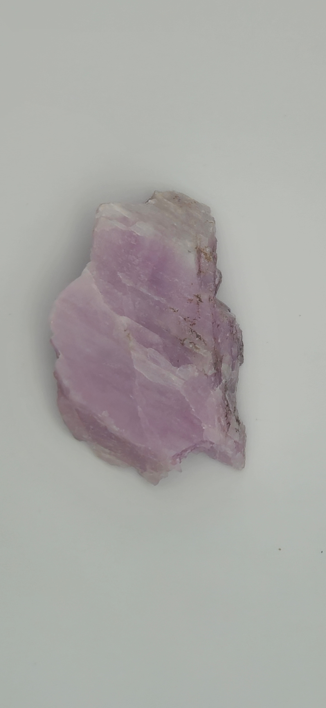
Régulation du système cardiovasculaire
Equilibre du système endocrinien
Apaisement des douleurs liées au stress
Renforcement du système immunitaire
Soutien des les troubles du sommeil
Aide à la désintoxication du corps
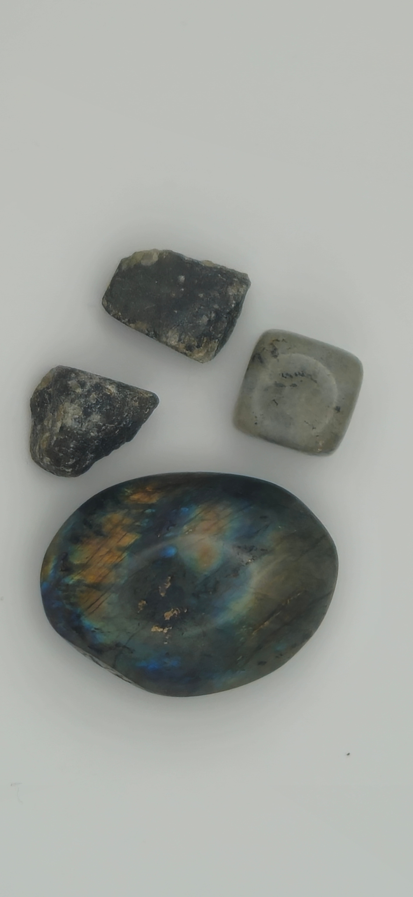
Renforcement du système respiratoire
Stimulation du système digestif
Apaisement des douleurs musculaires et articulaires
Régulation des mécanismes hormonaux
Renforcmement du système immunitaire
Amélioration de la vitalité générale
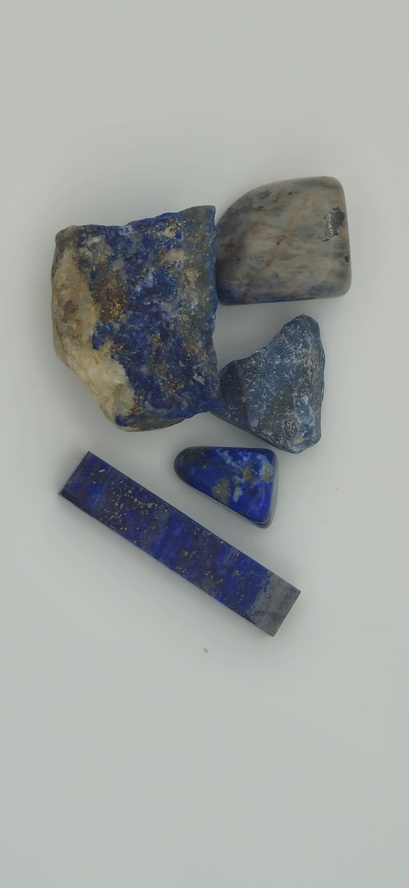
Favorise la détente respiratoire
Stimule le système immunitaire
Amélioration de la santé de la peau
Soutien au système nerveux
Renforcement de la vue
Soulage des douleurs
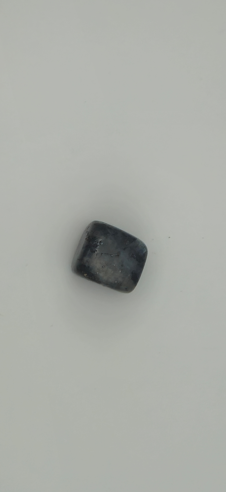
Optimisation du métabolisme
Purification et renorcement du système digestif
Amélriotation de la circulation sanguine
Soutien du système nerveux
Renforcement de l’énergie vitale
Protection contre les radiations électromagnatiques
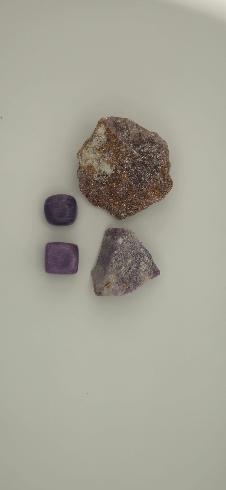
Réduction du stress et de l’anxiété
Equilib du système nerveux
Amélioration du sommeil
Soutien du sommeil
Soutien pour le système immunitaire
Aide a la detixification
Apaisement des douleurs
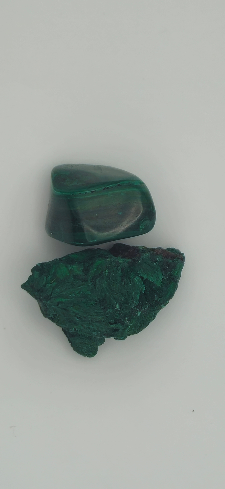
Renforcement du système immunitaire
Stimulation de le détoxification organique
Soulagement des douleurs articulaires et musculaires
Amélioration de la fonction digestive
Soutien au système cardiovasculaire
Effet bénéfique sur la peau
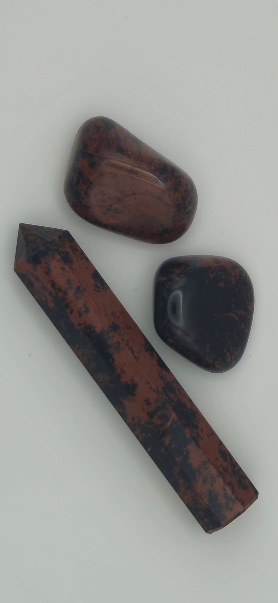
Effet anti-inflammatoire
Renforce le système immunitaire
Soutien au système sanguin et a la circulation
Régulation des mécanisms+es hormonaux
Amélioration du sommeil
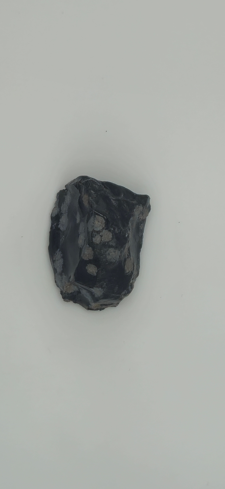
Soutien du système osseux et articulaire
Soutien du système digestif
Equilibre des énergies Yin et Yang
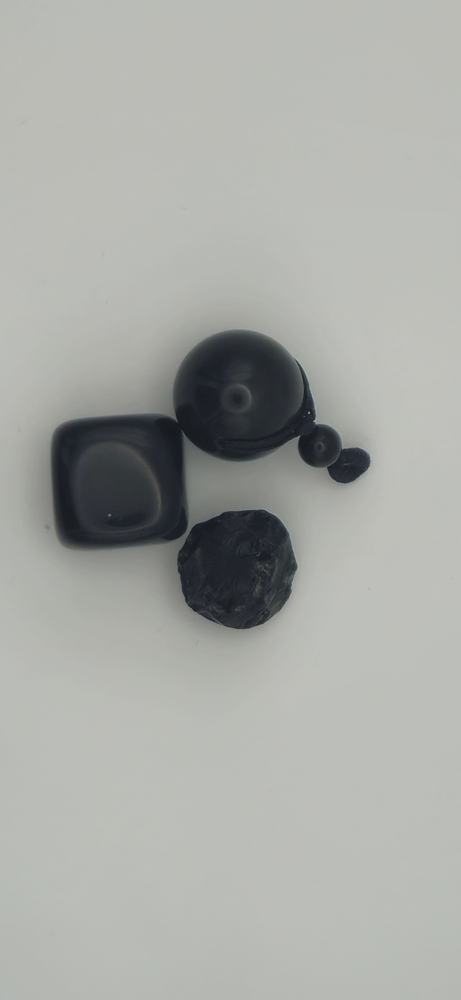
Renforcement du système digestif
Protection contre les énergies négatives
Soutien au système immunitaire
Accélération de la guérison des blessures
Amélioration de la circulation sanguine
Réduction des douleurs articulaires et musculaires
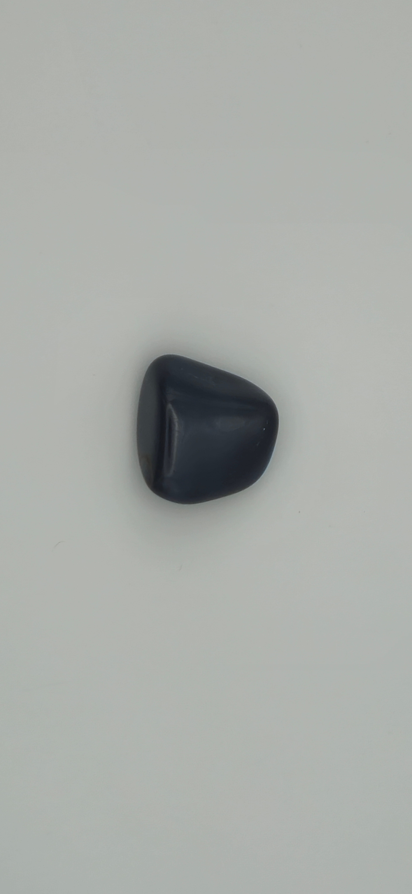
Régulation des systèmes respiratoires
Amélioration de la vision
Stimulation du métabolisme
Renforcement du système immunitaire
Soutien musculaire et articulaire
Effet détoxifiant et purifiant
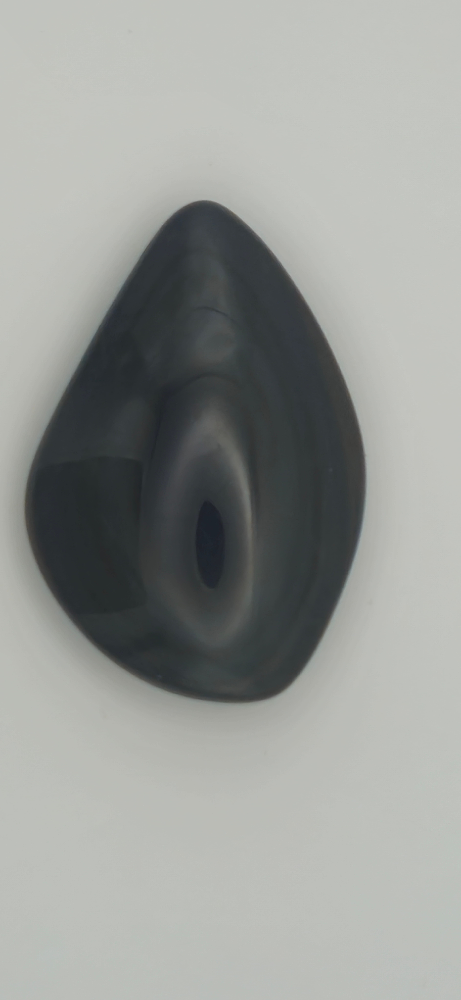
Régularistaion du système nerveux
Soulage les migraine et maux de tête
Amélioration du sommeil
Renforcement de l’énergie vitale
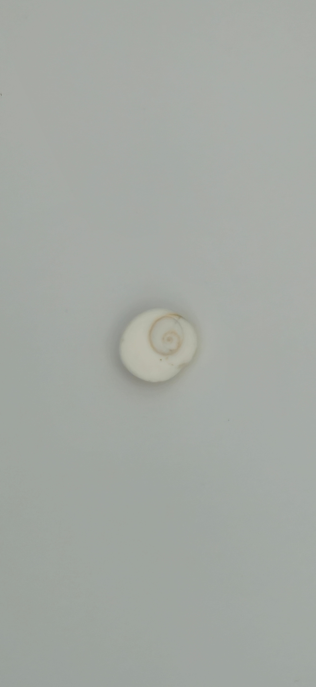
Soutien occulaire
Soutien le système nerveux
Soulage maux de gorges
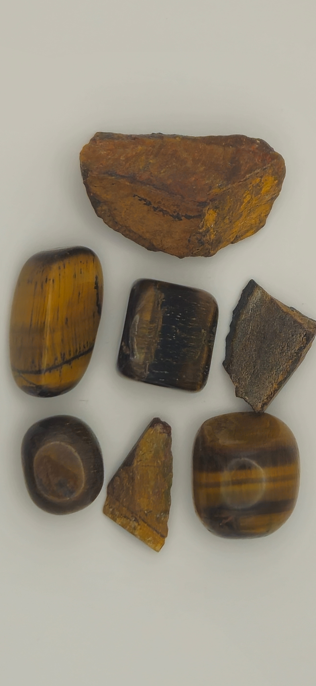
Renforcement de la structure osseuse et musculaire
Boost du système digestif
Soutien pour la vision
Propriété anti-inflammatoires
Stimulation de la circulation sanguine
Renforcement du système respiratoire
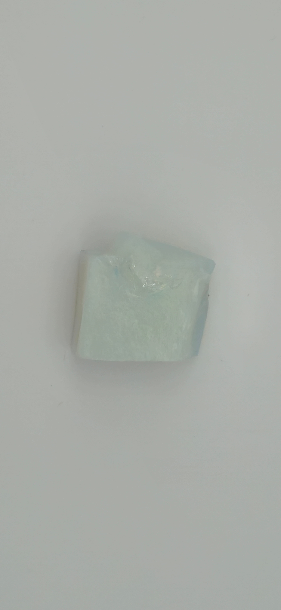
Renforcement de la vision
Stabilisation émotionnelle
Soutien du système digestif
Hydratation de la peau
Régulation hormonale
Amélioration de la fértilité
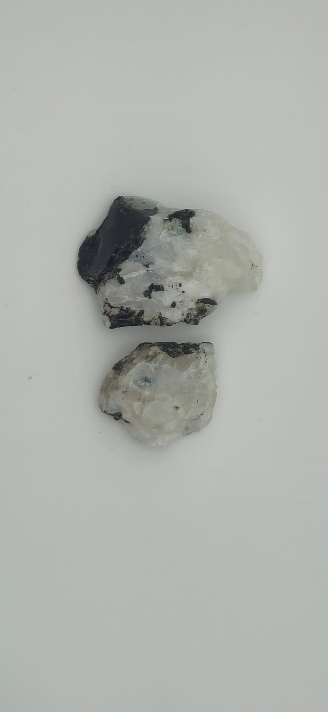
Equilibre hormonal féminin
Soutien de la fertilité et de la grossesse
Apaisement du système digestif
Réduction du stress et des troubles du sommeil
Amélioration de la circulation lymphatique et détoxification
Atténuation des douleurs et inflammations
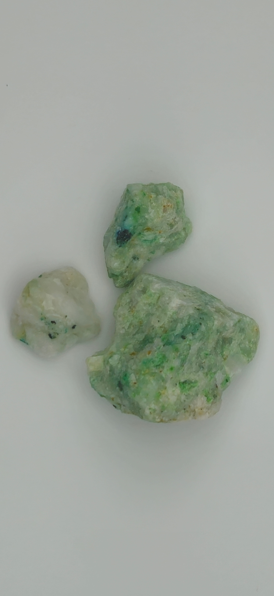
Soulage les douleurs musculaires et articulaires
Soutient le système immunitaire
Regain d’énergie
Favorise la cicatrisation
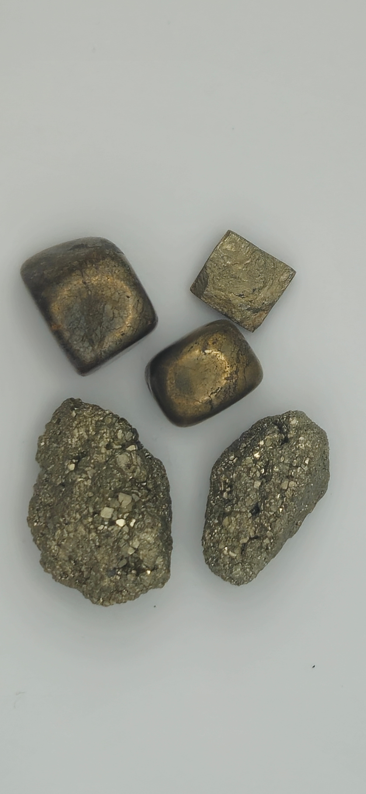
Boost énergétique et vitalité accrue
Renforcement du système respiratoire
Soutien au système digestif
Détoxification et purification
Protection contre les infections
Soulagement des douleurs et inflammations
Optimisation de la régénération cellulaire
Renforcement du système digestif
Diminution des effets du stress sur le corps
Amélioration de la densité osseuse
Purification du système respiratoire
Stabilisation des énergies vitales
Amélioration du sommeil
Régulation du système cardiovasculaire
Soutien pour le système immunitaire
Stimulation de la libido
Favorise la fertilité
Favorise la guérison émotionnelle
Soutien du système circulatoire
Amélioration de la santé et de la peau
Renforcement du système immunitaire
Equilibre des énergies Yin et Yang
Aide à la régulation du sommeil
Favorise la cicatrisation des blessures
Soutien du système cardiovasculaire
Apaisement des inflammations et des allergies
Stimulation de la fértilité
Renforcement du système immunitaire
Amélioration de l’audition
Renforce le système osseux
Régénère la peau
Améliore le sommeil
Renforcement du système circulatoire et cardiaque
Régulation du choléstérol
Apaisement des douleurs musculaires et menstruelles
Renforcement du système cardiovasculaire
Revitalisation de l’énergie vitale
Soulage les migraines et maux de tête
Apaise les douleurs rhumatismales, les sciatiques
Régénère la peau, les ongles et les cheveux
Traite la fièvre et les inflammations
Renforce le système veineux
Régule les épanchements sanguins
Soulage la sinusite, la bronchite
Améliore les troubles de la vue
Stimule la vitalité
Favorise la circulation sanguine
Apaisement des douleurs musculaire
Purification et régénération des cellules
Renforcement du système squelettique
Soutien du système digestif
Effet apaisant sur le système nerveux
Optimisation du sommeil
Stimulation du système immunitaire
Régulation du système digestif
Effet détoxifiant
Renforcement du système immunitaire
Apaisement des douleurs musculaires et articulaires
Amélioration de la circulation sanguine
Soutien au système respiratoire
Purification et protection contres les ondes électromagnétiques
Renforcement du système immunitaire
Amélioration de la vitalité et réduction de la fatigue
Effet détoxifiants
Soutien au processus de guérison
Equilibre énergétique et réduction du stress
Purification et protection contre les ondes électromagnétique
Soutien du système circulatoire
Soutien du système osseux
Régulation de la pression artérielle
Equilibre métabolique et contrôle du poids
Renforcement du système immunitaire
Apaisement des troubles digestifs
Soutien au système lymphatique
Atténuation des problèmes de peau
Réduction du stress et de l’anxiété
Protection contre les ondes électromagnétiques
Renforcement du système musculo-squelettique
Stabilisation de la pression artérielle
Purification et renforcement du système digestif
Amélioration du sommeil
Soutien au système immunitaire
Régulation émotionelle et apaisement
Soutien carldiovasculaire
Renforcement du système immunitaire
Bienfait pour la peau
Harmonisation hormonale
Amélioration de la santé reproductive
Renforcement du système immunitaire
Protection contre les polluants environnementaux
Amélioration de la santé respiratoire
Effet anti-inflammatoire et analgésiques
Stimulation de la régénérations des tissus
Equilibre hydrique et détoxification
Soutien aux systèmes digestif et circulatoire
Facilitation de la convalescence
Stimulation de la croissance osseuse
Soutien de la fonction reproductive
Amélioration de la digestion
Purification du foie et des reins
Réduction de l’effet des ondes électromagnétiques
Cette collection rassemble des pierres choisies pour leur beauté, leur rareté et leur histoire. Chaque pierre possède ses propres formes, couleurs et caractéristiques naturelles.